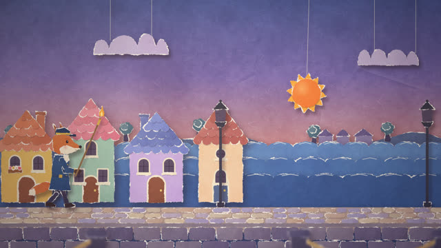
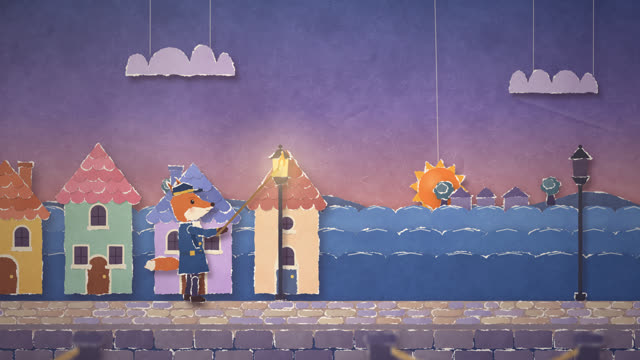
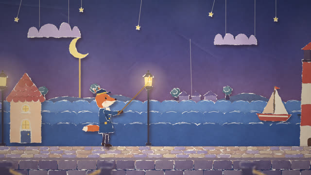
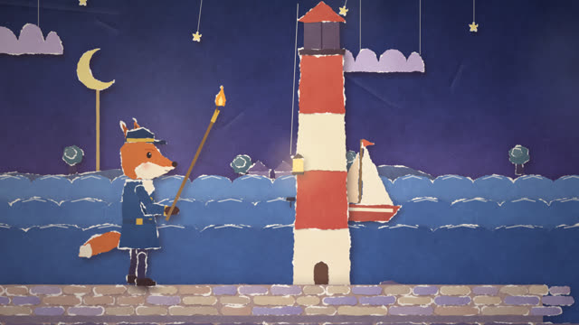
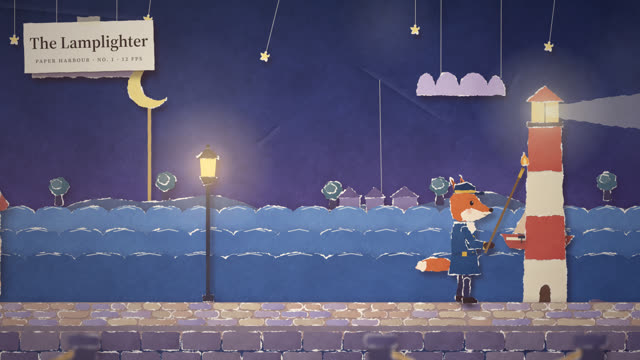

작업 흐름
- 입력
- 주제 하나(항구의 가로등을 켜는 여우, 배로 빵을 나르는 두더지 …). 레퍼런스 영상이 있으면 그 스틸
- 브리프
- 심부름 · 종이 인형으로 설계한 주인공 · 무대 한 곳과 레이어 · 실과 막대에 매단 것 · 빛의 변화 · 반전 하나 · 3–6박자를 적은
BRIEF.md - 부품
- 이미지 모델로 부품 시트를 받아(
gen-parts.mjs) PNG 부품으로 자르기(cut-parts.mjs), 또는 코드로 찢은 종이 조각으로 오리기 — 둘 다 같은 리그에 핀으로 고정 - 확인
- 양쪽 방향 캐스트 시트(관절이 가능한 쪽으로 꺾이는지, 앞뒤가 맞는지), 무작위 스틸 채점, 모든 샷 그리기 · 빈 프레임 · 결정성 · 한 장을 2프레임씩 유지하는지 · 관절 범위 · 작품 규칙 · 악보 검사
- 출력
- 24fps 1920×1080 MP4(한 장을 2프레임씩, 오르골 · 종이 · 불꽃 효과음 포함), ♪ 버튼으로 소리까지 재생하는 라이브 페이지
cd paper-cutout-short/examples/lamplighter
node ../../scripts/check.mjs index.html
node ../../scripts/render.mjs cast.html --stills 0 --scale .5
node ../../scripts/score.mjs score.js --dur 20.2 --out out/lamplighter.wav
node ../../scripts/render.mjs index.html --workers 4 --audio out/lamplighter.wav
cd ../parts-route
node ../../scripts/cut-parts.mjs sheet.png --names head,torso,tail,armN,foreN,thighN,shinN,footN --out parts/ember
node ../../scripts/new-film.mjs ../../../my-film요구 사항: Node + Playwright Chromium, ffmpeg. GPU와 npm 설치가 필요 없습니다(CPU에서 1080p 한 프레임 약 0.17초, 20초 영상을 워커 4개로 약 1분 30초). 이미지 경로는 이미지 모델이 더 필요합니다(gen-parts.mjs는 OPENAI_API_KEY, 또는 PNG를 저장하는 아무 도구). 단계별 순서는 SKILL.md에 있습니다.
샘플
원본 영상에 없는 주제로 브리프부터 새로 설계해 만든 예제의 장면, 캐스트 시트, 이미지 부품 경로, 시작 템플릿입니다. 카드를 누르면 그 장면이 라이브 페이지에서 열립니다.
「The Lamplighter」 20.2초 · 3샷 · 코드로 오린 종이
해 질 녘 종이 항구에서 여우 점등원이 장대로 가로등을 켜고, 실에 매단 등불이 등대를 올라가 불이 들어오기까지

샷 1 · 부두걸어 들어오기실에 매단 해, 미끄러지는 파도 띠, 카메라가 부두를 따라 이동

샷 1 · 4.3초첫 가로등장대 끝이 유리에 닿는 위치를 리그로 계산, 닿는 순간 불이 켜지고 창문이 하나씩

샷 1 · 8.9초달이 올라옴막대에 꽂힌 달, 실로 내려오는 별, 저녁 하늘 종이가 밤 종이로

샷 2 · 등대실을 타고 오르는 등불무대의 실을 드러내는 반전, 카메라가 등불을 따라 위로

샷 3 · 밤제목표와 빛줄기반투명 종이 빛줄기가 돌고, 여우가 장대로 신호한 뒤 뒤집어 돌아섬
캐스트 시트와 이미지 부품 경로 양쪽 방향 · 자른 PNG
장면을 쓰기 전에 인형을 양쪽 방향으로 돌려 보고, 이미지 모델이 그린 시트를 부품으로 잘라 같은 리그에 고정합니다
시작 템플릿 8초 · 2샷
새 프로젝트의 출발점입니다. 주제에 맞게 인형과 무대를 새로 설계해 바꿉니다
링크
- SKILL.md 워크플로
- 폴더 lib · scripts · templates · examples
- README.md 빠른 시작
- references/BRIEF.md 주제 → 브리프, 캐스트 · 스틸 검토 기준
- references/LOOK.md 원본에서 관찰한 화면 문법
- references/PARTS.md 이미지 모델 부품 시트: 규칙 · 스타일 프롬프트 · 자르기 · 핀 고정
- references/KIT.md API와 페이지 계약
- references/LESSONS.md 겪은 문제와 해결